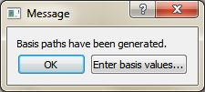
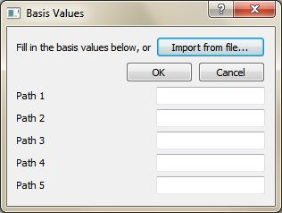
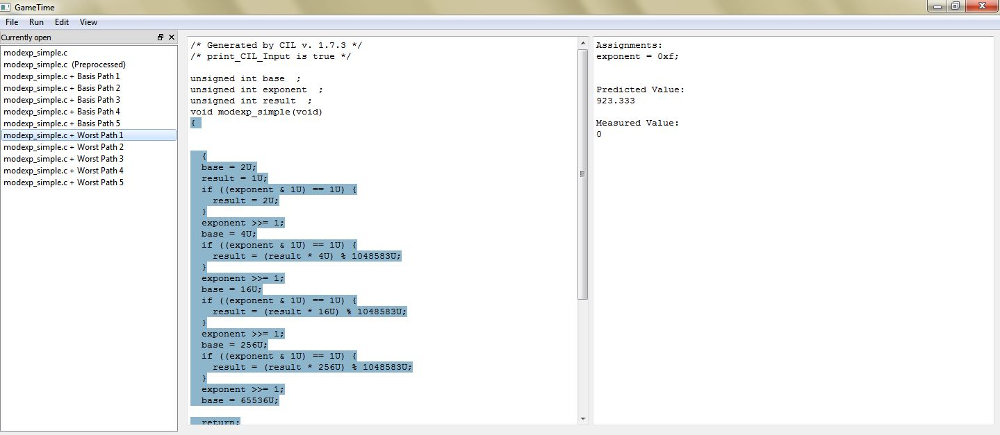
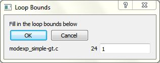

Tutorials for working with GameTime.
A project in GameTime refers to the code that needs to be analyzed, along with the resulting analyses and generated test cases. During a project, there are two main ways to interact with GameTime:
Through a Python script: GameTime has a Python interface that can be imported as a module in Python scripts. The distribution includes a Python script that can be used to perform common features of the GameTime analysis.
Through a graphical user interface: GameTime has a graphical user interface that can be used to perform the common features of the GameTime analysis.
The tutorials 1, 2 and 3 below require GameTime version 1.0 (or newer) whereas tutorial 4 requires version 1.5 (or newer) of GameTime, available here. If you run into any issues when following a tutorial, please contact us and we will respond as soon as possible.
The GameTime distribution contains a sandbox directory called sandbox where you can add your own projects. The directory also contains a ready-made Python script that uses the Python interface to the GameTime toolkit. This sandbox script, available at sandbox/analyzeProject.py, allows you to analyze the code within your projects.
The GameTime distribution also contains the shortcut to an executable, available at gametime-cli, which sets several environment variables and provides a command-line interface to GameTime. The tutorials below will use this command-line interface to interact with the sandbox script.
For brevity, when used in the tutorials below, the phrase "basis (or feasible) paths" of code being analyzed refers to the basis (or feasible) paths in the control-flow graph for that code.
In this tutorial, you will explore how to use the sandbox script to generate the test cases that correspond to the basis paths of exemplar code. You will then use pre-obtained measurements of these test cases to generate other test cases that correspond to the five worst-case paths (or the paths with the longest predicted timings).
Run the executable gametime-cli located in the root directory of the GameTime distribution. This launches a command-line interface to GameTime: a window that contains a Cygwin prompt. Navigate to the root directory of the GameTime distribution.
The GameTime distribution includes several sample
projects within the demo/sandbox directory.
Copy the directory labeled modexp_unrolled,
which constitutes the GameTime project for this
tutorial, to the sandbox directory:
cp -r demo/sandbox/modexp_unrolled sandbox
Examine the contents of the copied directory:
The C file, modexp_simple.c,
contains an implementation of modular exponentiation,
where a base (the global variable base)
is raised to an exponent (the global variable
exponent), modulo a large prime number.
The code that will be analyzed is present
in a function called modexp_simple.
The function implements the square-and-multiply algorithm, with one conditional statement for each bit of the exponent. Since there are only four conditional statements, this implementation is specific to four-bit exponents.
The project configuration file, projectConfig.xml, is an XML file that, as the name implies, contains many options that allow you to configure a GameTime project. In particular, the following tags are relevant for this tutorial:
<location>: The value of this
tag is the location of the file that contains
the code to be analyzed. This location can be
either absolute or relative: if relative,
the location is resolved with respect to
the directory that contains the project
configuration XML file.
<analysis-function>:
The value of this tag is the name of the function
that is to be analyzed.
<ilp-solver>: The value of
this tag is the name of the ILP solver that will
be used by GameTime for its analysis. For this
tutorial, the value is glpk, which
indicates that the ILP solver from GLPK will
be used.
<smt-solver>: The value of
this tag is the name of the SMT solver that will
be used by GameTime for its analysis. For this
tutorial, the value is z3, which
indicates that Z3, the SMT solver from Microsoft,
will be used. You can change this to
boolector if you would like GameTime
to use Boolector instead.
The documentation presents a comprehensive guide to all of the tags in the project configuration file.
The directory simulations, which contains
files that have the timings of the test cases
that correspond to the basis paths of
modexp_simple. The subdirectory
ptarmsim-1.0 contains the timings as
measured on the
PTARM simulator. (To install the PTARM simulator,
please refer to
step 3 of
the installation guide. However, you do
not need to install the simulator for
this tutorial.)
Run the following command at the prompt:
analyze -a
sandbox/modexp_unrolled/projectConfig.xml -b
This command will generate the test cases that
correspond to the basis paths of the code in
modexp_simple.
This command runs the sandbox script. The path
provided to the command-line argument -a
provides the script with the path of a project
configuration file. This path can be either absolute
or relative: if relative, as in this command,
the location of the file is resolved against
the current working directory.
The command-line argument -b
instructs the script to generate the test cases
that correspond to the basis paths of the code
that is being analyzed.
If the previous step completes successfully, there should be two new directories inside the project directory sandbox/modexp_simple:
The directory called modexp_simple-gt
is a temporary directory created by GameTime.
It contains the temporary files that GameTime
creates and needs as it performs its analysis.
Note that the temporary directory has the same name
as the function that contains the code being analyzed
(modexp_simple), with the suffix
-gt.
The directory called analysis contains
the results of the GameTime analysis that was just
performed. The subdirectory basis stores
all of the information regarding the basis paths
of the code in modexp_simple.
In particular, the subdirectory case
contains the test cases that correspond to
the (five) basis paths of the code in
modexp_simple: the file labeled
case-n contains the test case
that corresponds to the nth basis path.
Each of these test cases should be an assignment
to the global variables in
modexp_simple. For this tutorial,
each test case assigns a value to the global
variable exponent. Each test case
will drive the execution of the function along
a basis path.
Now that GameTime has generated the basis paths
of the code in modexp_simple and
the corresponding test cases, you can measure these
test cases on the platform of your choice. For this
tutorial, however, you can use the timing measurements
already collected on the PTARM simulator,
as stored in the directory
simulations/ptarmsim-1.0.
The file z3-glpk contains the timing measurements for the basis paths obtained in this tutorial. As the name of the file indicates, these measurements were made for the basis paths generated with Z3 as the SMT solver and GLPK as the ILP solver. (If you changed the SMT solver to Boolector in step 3, you can use the file boolector-glpk for the next step instead.)
In the file, lines that begin with the
# character are comments. Each of
the other lines in the file has the number of
a basis path and the measurement of the corresponding
test case on the PTARM simulator, with the values
separated by whitespace.
Run the following command in the root directory of the GameTime distribution:
analyze -a
sandbox/modexp_unrolled/projectConfig.xml -w -n 5 \
--values
sandbox/modexp_unrolled/simulations/ptarmsim-1.0/z3-glpk
This command will generate the test cases that
correspond to the five worst-case feasible paths of
the code in modexp_simple.
The command-line argument -w
instructs the script to generate the test cases
that correspond to the worst-case feasible paths of
the code that is being analyzed. The value of
the command-line argument -n notifies
the script of the number of these paths that should
be generated.
The path provided to the command-line argument
--values is the path for the file
that contains the measurements for the five basis
paths that were generated earlier. This command
thus assumes that the basis paths were generated
in a prior analysis.
If the previous step completes successfully, the directory called analysis, inside the project directory sandbox/modexp_simple, should now contain another subdirectory called worst.
As with the subdirectory basis from
step 5,
the subdirectory worst also contains
the subdirectory case, which stores
the test cases that correspond to the (five)
worst-case feasible paths of the code in
modexp-simple: the files are
arranged in decreasing order of predicted
timings, with the file labeled case-1
storing the test case for the worst-case feasible
path, and the file labeled case-5 storing
the test case for the fifth worst-case feasible path.
Notice that the test case for the predicted worst-case
feasible path assigns a value of 0xf
to the global variable exponent.
All of the four bits of exponent are thus
set to 1. This indicates that
the worst-case feasible path occurs when all four
conditional statements in the code of
modexp_simple evaluate to true.
In the test cases for the other four predicted
worst-case feasible paths, exactly one bit of
exponent is 0, which implies
that exactly one of the four conditional statements
evaluates to false.
The predicted timings themselves are stored in the file labeled predicted-worst inside analysis. Each line has the number of a (worst-case) feasible path and the predicted timing of the corresponding test case, with the values separated by whitespace.
In this tutorial, as in the previous tutorial, you will explore how to use the sandbox script to generate the test cases that correspond to the basis paths of exemplar code. However, this exemplar code calls another function, which thus needs to be inlined for the GameTime analysis. You will then use pre-obtained measurements of these test cases to generate other test cases that correspond to the five best-case paths (or the paths with the shortest predicted timings).
Run the executable gametime-cli located in the root directory of the GameTime distribution. This launches a command-line interface to GameTime: a window that contains a Cygwin prompt. Navigate to the root directory of the GameTime distribution.
Copy the directory labeled speed, which
constitutes the GameTime project for this tutorial,
from the demo/sandbox directory to
the sandbox directory:
cp -r demo/sandbox/speed sandbox
Examine the contents of the copied directory:
The C file, speed.c, contains code that
calculates the final (one-dimensional) speed of
an object with an initial speed (the global
variable initial_speed) and constant
acceleration (the global variable acc),
after a certain amount of time (the global variable
time). However, the final speed cannot
exceed a certain predefined limit (the constant
LIMIT, which here is assigned to
100). The code that will be analyzed is
present in a function called
calculate_final_speed. To ensure that
the final speed does not exceed the limit,
the function saturate is used: this
is the function that needs to be inlined.
The project configuration file, projectConfig.xml. Step 3 of tutorial 1 describes some of the tags in this file, and the documentation presents a comprehensive guide to all of these tags.
In particular, note that the value of the tag
<inline> is saturate,
which indicates that this function needs to be
inlined into the function that is to be analyzed:
calculate_final_speed, which is
the value of the tag
<analysis-function>.
The directory simulations, which contains
files that have the timings of the test cases
that correspond to the basis paths of
calculate_final_speed, after
the function saturate has been inlined.
The subdirectory ptarmsim-1.0 contains
the timings as measured on the
PTARM simulator. (To install the PTARM simulator,
please refer to
step 3 of
the installation guide. However, you do
not need to install the simulator for
this tutorial.)
Run the following command at the prompt:
analyze -a
sandbox/speed/projectConfig.xml -b
This command will generate the test cases that
correspond to the basis paths of the code in
calculate_final_speed, after inlining
the function saturate. A description of
this command is provided in
step 4 of
tutorial 1.
If the previous step completes successfully, there should be two new directories inside the project directory sandbox/speed:
The directory called speed-gt
is a temporary directory created by GameTime.
It contains the temporary files that GameTime
creates and needs as it performs its analysis.
In particular, GameTime uses the file
speed-gt-inlined.c for its analysis, which
contains the same code as that in speed.c,
but the code in saturate is inlined into
the code in calculate_final_speed.
The directory called analysis contains
the results of the GameTime analysis that was just
performed. The subdirectory basis stores
all of the information regarding the basis paths
of the code in calculate_final_speed
(with the code in saturate inlined).
In particular, the subdirectory case
contains the test cases that correspond to
the (three) basis paths of the code: the file labeled
case-n contains the test case
that corresponds to the nth basis path.
Each of these test cases should be an assignment
to the global variables in
calculate_final_speed. Each test case
will drive the execution of the function along
a basis path.
Now that GameTime has generated the basis paths
of the code in calculate_final_speed
(with the code in saturate inlined) and
the corresponding test cases, you can measure these
test cases on the platform of your choice. For this
tutorial, however, you can use the timing measurements
already collected on the PTARM simulator,
as stored in the directory
simulations/ptarmsim-1.0.
The file z3-glpk contains the timing measurements for the basis paths obtained in this tutorial. As the name of the file indicates, these measurements were made for the basis paths generated with Z3 as the SMT solver and GLPK as the ILP solver. (If you changed the SMT solver to Boolector in the project configuration file, you can use the file boolector-glpk for the next step instead.) These files are further described in step 6 of tutorial 1.
Run the following command in the root directory of the GameTime distribution:
analyze -a
sandbox/speed/projectConfig.xml -v -n 3 \
--values
sandbox/speed/simulations/ptarmsim-1.0/z3-glpk
This command will generate the test cases that
correspond to the three best-case feasible paths of
the code in calculate_final_speed
(with the code in saturate inlined).
The command-line argument -v
instructs the script to generate the test cases
that correspond to the best-case feasible paths of
the code that is being analyzed. The other
command-line arguments are further described in
step 7 of
tutorial 1.
If the previous step completes successfully, the directory called analysis, inside the project directory sandbox/speed, should now contain another subdirectory called best.
As with the subdirectory basis from
step 5,
the subdirectory best also contains
the subdirectory case, which stores
the test cases that correspond to the (three)
best-case feasible paths of the code in
calcuate_final_speed (with the code in
saturate inlined): the files are
arranged in increasing order of predicted
timings, with the file labeled case-1
storing the test case for the best-case feasible
path, and the file labeled case-3 storing
the test case for the third best-case feasible path.
Notice that the test case for the predicted best-case
feasible path sets both the acceleration
(acc) and the time (time)
to zero, and sets the initial speed
(initial_speed) to 0x65.
These values produce a final speed (0x65)
that satisfies the first condition of the only
if-statement in the function
saturate: value > LIMIT,
where LIMIT is 100
(or 0x64).
The test case for the next feasible path sets
the global variables to values that produce a final
speed. This speed does not satisfy the first condition
of the if-statement, but satisfies
the second condition. The execution of this feasible
path thus needs two conditions to be evaluated, which
results in a slightly longer timing for the path.
Similarly, the execution of the third feasible path
results in the evaluation of all three conditions,
which results in the longest timing among the three
predicted best-case feasible paths.
The three feasible paths produced also correspond to
the only three feasible paths through the function
calculate_final_speed, after the function
saturate has been inlined.
The predicted timings themselves are stored in the file labeled predicted-best inside analysis. Each line has the number of a (best-case) feasible path and the predicted timing of the corresponding test case, with the values separated by whitespace.
In this tutorial, as in the previous two, you will explore
how to use the sandbox script to generate the test cases
that correspond to the basis paths of exemplar code.
This code performs modular exponentiation, as
the exemplar code from tutorial 1
does, but employs a for-loop to loop through
the bits of the exponent. This loop needs to be unrolled
for the GameTime analysis. You will then use pre-obtained
measurements of the generated test cases to generate
the test cases that correspond to all of
the feasible paths.
Run the executable gametime-cli located in the root directory of the GameTime distribution. This launches a command-line interface to GameTime: a window that contains a Cygwin prompt. Navigate to the root directory of the GameTime distribution.
Copy the directory labeled modexp, which
constitutes the GameTime project for this tutorial,
from the demo/sandbox directory to
the sandbox directory:
cp -r demo/sandbox/modexp sandbox
Examine the contents of the copied directory, which should be similar to those in tutorial 1:
The C file, modexp_simple.c,
contains an implementation of modular exponentiation,
where a base (the global variable base)
is raised to an exponent (the global variable
exponent), modulo a large prime number.
The code that will be analyzed is present
in a function called modexp_simple.
Notice that, unlike the code in tutorial 1,
this implementation uses a for-loop.
The project configuration file, projectConfig.xml. Step 3 of tutorial 1 describes some of the tags in this file, and the documentation presents a comprehensive guide to all of these tags.
The directory simulations, which contains
files that have the timings of the test cases
that correspond to the basis paths of
modexp_simple. The subdirectory
ptarmsim-1.0 contains the timings as
measured on the
PTARM simulator. (To install the PTARM simulator,
please refer to
step 3 of
the installation guide. However, you do
not need to install the simulator for
this tutorial.)
Run the following command at the prompt:
analyze -a
sandbox/modexp/projectConfig.xml -b
This command should generate the test cases that
correspond to the basis paths of the code in
modexp_simple. A description of
this command is provided in
step 4 of
tutorial 1. However, this time, GameTime ends
its analysis with a notification that loops in
the code have been detected. These loops need
to be unrolled for any further analysis.
As per the instructions from GameTime, navigate
to the temporary directory generated by GameTime
for its analysis, located at
sandbox/modexp/modexp_simple-gt.
Examine the loop configuration file
loop-config, and edit the third item
of the first comma-separated line from 1 to
4.
The loop configuration file informs the user of the locations of the loops within the file that is analyzed by GameTime, and allows the user to direct GameTime to unroll each loop a certain number of times.
In the file, each line is a comma-separated
list of three items: the name of the file that
is analyzed by GameTime and contains loops
(modexp_simple-gt.c), the line
number of the header of the loop (24),
and the number of times this loop should be
unrolled (with a default value of 1).
Note that, as declared in the loop configuration file, the file that is analyzed by GameTime is not the original file, but a copy of the file made by GameTime for the purposes of its analysis. This copy is stored within the temporary directory created by GameTime (modexp_simple-gt).
Also note that, when the third item of the first line
is edited from 1 to 4,
the only loop in the code, whose header is at line 24,
will be unrolled four times. This should result in
code that is functionally equivalent to the code in
tutorial 1, which performed modular exponentiation with
four-bit exponents.
Run the following command at the prompt:
analyze -a
sandbox/modexp/projectConfig.xml --unroll-loops
-b
This command should generate the test cases that
correspond to the basis paths of the code in
modexp_simple, after its only loop
has been unrolled.
The command-line argument --unroll-loops
instructs GameTime to unroll the loops in the code
using the bounds provided by the user in the loop
configuration file generated during loop detection.
If the previous step completes successfully, there should be another directory inside the project directory sandbox/modexp_simple besides the temporary directory modexp_simple-gt:
The directory called analysis contains
the results of the GameTime analysis that was just
performed. The subdirectory basis stores
all of the information regarding the basis paths
of the code in modexp_simple (after its
loop has been unrolled). In particular, the subdirectory
case contains the test cases that correspond to
the (five) basis paths of the code in
modexp_simple (after its loop has been
unrolled): the file labeled
case-n contains the test case
that corresponds to the nth basis path.
Each of these test cases should be an assignment
to the global variables in
modexp_simple. For this tutorial,
as in step 5
of tutorial 1, each test case assigns a value
to the global variable exponent.
Each test case will drive the execution of
the function along a basis path.
Now that GameTime has generated the basis paths
of the code in modexp_simple (after its
loop has been unrolled) and the corresponding test cases,
you can measure these test cases on the platform of your
choice. For this tutorial, however, you can use
the timing measurements already collected on
the PTARM simulator, as stored in the directory
simulations/ptarmsim-1.0.
The file z3-glpk contains the timing measurements for the basis paths obtained in this tutorial. As the name of the file indicates, these measurements were made for the basis paths generated with Z3 as the SMT solver and GLPK as the ILP solver. (If you changed the SMT solver to Boolector in the project configuration file, you can use the file boolector-glpk for the next step instead.) These files are further described in step 6 of tutorial 1.
Run the following command in the root directory of the GameTime distribution:
analyze -a
sandbox/modexp/projectConfig.xml -d \
--values
sandbox/modexp/simulations/ptarmsim-1.0/z3-glpk
This command will generate the test cases that
correspond to all (sixteen) of the feasible paths of
the code in modexp_simple
(after its loop has been unrolled).
The command-line argument -d
instructs the script to generate the test cases
that correspond to all of the feasible paths of
the code that is being analyzed, in
decreasing order of their predicted timings.
The other command-line arguments are further described
in step 7 of
tutorial 1.
If the previous step completes successfully, the directory called analysis, inside the project directory sandbox/modexp_simple, should now contain another subdirectory called all-dec.
As with the subdirectory basis from
step 7,
the subdirectory all-dec also contains
the subdirectory case, which stores
the test cases that correspond to all of the (sixteen)
feasible paths of the code in modexp-simple:
the files are arranged in decreasing order of predicted
timings, with the file labeled case-1
storing the test case for the (predicted) worst-case
feasible path, and the file labeled case-16
storing the test case for the (predicted) best-case
feasible path.
Notice that the test case for the predicted worst-case
feasible path assigns a value of 0xf
to the global variable exponent.
All of the four bits of exponent are thus
set to 1. This indicates that
the worst-case feasible path occurs when all four
conditional statements in the code of
modexp_simple evaluate to true.
Also notice that the test case for the predicted
best-case feasible path assigns a value of
0x0 to the global variable
exponent, which implies that all
four conditional statements evaluate to false.
The predicted timings themselves are stored in the file labeled predicted-all-dec inside analysis. Each line has the number of a feasible path and the predicted timing of the corresponding test case, with the values separated by whitespace.
In this tutorial, we explore how to obtain more accurate estimates on the length of the longest path by generating (and measuring) more basis paths than the minimum number necessary. (As described in this paper). We will analyze a sample implementation of the insertion-sort algorithm sorting an array of a fixed size.
We begin by doing the same kind of analysis as in the previous tutorial. Then we explore how to generate and use larger sets of basis paths to obtain better and more accurate predictions of the longest paths. Finally, we compare the results obtained by both methods.
Run the executable gametime-cli located in the root directory of the GameTime distribution. This launches a command-line interface to GameTime: a window that contains a Cygwin prompt. Navigate to the root directory of the GameTime distribution.
Copy the directory labeled insertion_sort, which
constitutes the GameTime project for this tutorial,
from the demo/sandbox directory to
the sandbox directory:
cp -r demo/sandbox/insertion_sort sandbox
Examine the contents of the copied directory
The C file, insertion_sort.c,
contains an implementation of the insertion-sort
algorithm which sorts the global array of integers:
a. We will analyze the code in the
function insertion_sort. The constant
LENGTH specifies the size of the array
a. To keep the generated intermediate
results small and the analysis fast, we use
LENGTH = 8 in the tutorial.
The project configuration file, projectConfig.xml. Step 3 of tutorial 1 describes some of the tags in this file, and the documentation presents a comprehensive guide to all of these tags.
In this tutorial, we will introduce and describe a
new parameter maximum-error-scale-factor
in the projectConfig.xml file which directs
GameTime to produce more accurate predictions.
In the tutorial, we will first run GameTime using the
same approach as in the previous tutorials. Then we run
GameTime with different algorithm for two different
values of maximum-error-scale-factor. The
subdirectory simulations/ptarmsim-1.0, contains
timings of basis paths obtained using the
PTARM simulator for the three cases:
original-glpk-z3, error-10-glpk-z3,
error-5-glpk-z3. (To install the PTARM simulator,
please refer to
step 3 of the installation guide. However, you do
not need to install the simulator for
this tutorial.)
The insertion-sort implementation analyzed in this tutorial contains two loops. As in the previous tutorial, we first unroll the loops up to the specified limit to obtain a loop-free code. Make sure you are in the root directory of the GameTime distribution and then run the following command at the prompt:
analyze -a
sandbox/insertion_sort/projectConfig.xml -b
As in the previous tutorial, GameTime ends its analysis with a notification that loops in the code have been detected. These loops need to be unrolled for any further analysis.
As per the instructions from GameTime, navigate
to the temporary directory generated by GameTime
for its analysis, located at
sandbox/insertion_sort/insertion_sort-gt.
Examine the loop configuration file
loop-config, and edit the third item
of the first comma-separated line from 1 to
4 and the third item on the second
comma-separated line from1 to 7
For more details on the individual entries, see the
description of the loop-config file in the
previous tutorial.
Note that the first line in the
loop-config file corresponds to the inner
while loop and the second line to the outer
for loop in the insertion_sort
function.
Notice that we specify that the inner
while loop in the insertion sort is
unrolled only 4 times. In general, to
always sort the input, the loop needs to be unrolled
as many as 7 times. This intentional
underspecification of the loop bound, yields a smaller
program easier to analyse while still providing a
relevant test cases and performance.
Now that we specified the desired unrolling, run the following command at the prompt:
analyze -a
sandbox/insertion_sort/projectConfig.xml --unroll-loops
-b
The command generates the test cases that
correspond to the basis paths of the code in the function
insertion_sort, after its loops have been
unrolled (c.f.,
previous tutorial
) the
specified number of times.
If the previous step completes successfully, another directory (analysis) should be created inside the project directory sandbox/insertion_sort (besides the temporary directory insertion_sort-gt).
The directory analysis contains the results of the GameTime analysis that was just performed, see the previous tutorial for its description.
For example, each generated test case, in directory
sandbox/insertion_sort/analysis/basis/case is
an assignment to the global array a that is
then being sorted in the insertion_sort
function. In total, 23 test cases should have been
generated.
Now that GameTime has generated the basis paths
of the code in insertion_sort (after its
loops have been unrolled) and the corresponding test
cases, you can measure these test cases on the platform of
your choice. For this tutorial, however, you can use
the timing measurements already collected on
the PTARM simulator, as stored in the directory
simulations/ptarmsim-1.0.
The file original-glpk-z3 contains the timing measurements for the basis paths obtained in this tutorial for the basis paths generated in the previous steps. The file should contain 23 measurements; one for each basis path. Note that, in total, there is a total of 15000 paths in the control flow graph.
Run the following command in the root directory of the GameTime distribution:
analyze -a
sandbox/insertion_sort/projectConfig.xml -w -n 3 \
--values
sandbox/insertion_sort/simulations/ptarmsim-1.0/original-glpk-z3
This command will generate the test cases corresponding
to the three feasible paths with the longest predicted
length (specified by -w -n 3 flag) using the
measurements from the given file.
The projectConfig.xml file for the analyzed project has been configured to use Z3 SMT solver and the GLPK ILP solver. We provide measurements for the basis generated using these solvers.
If the previous step completes successfully, the directory called analysis, inside the project directory sandbox/insertion_sort, should now contain another subdirectory called worst.
The subdirectory analysis/worst/case should
now contain three files, the contents of which are the
arguments corresponding to the three longest predicted
paths. The predicted lengths of the paths can be found
in the file analysis/predicted-worst. As of
time of writing this tutorial, the predicted lengths are
6311, 6150, 6148 clock cycles respectively
The lengths in the file predicted-worst are only the predictions for the paths corresponding to test cases in analysis/worst/case. Therefore, if we actually run the insertion_sort.c with the computed arguments, we expect, due to timing irregularities, the path lengths to differ.
We have run the code in insertion-sort.c on
the given test cases and measured the following lengths:
5766, 6045, 5605. As expected, the observed
lengths differ from the predicted ones. Note that, due
to timing irregularities, the path that corresponded to
the second longest predicted path is actually longer
than the one that was predicted to be the longest.
If you have installed a simulator and specified the
loop unrolling in the loop-config file, all
values computed in this tutorial and the entire analysis
until this point can be obtained by a single command:
analyze -a sandbox/insertion_sort/projectConfig.xml
-b -m -w -n -3 --unroll-loops
If the above command terminates sucessfully and you have
a simulator installed, GameTime creates a file
analysis/measured-word containing the measured
lengths of the three paths.
We now describe how to obtain more accurate predictions
of paths lengths. This then allows us to find arguments on
which insertion_sort runs longer than on any
of the inputs computed in the previous steps.
(Assumming the loops have been unrolled), run the
following command in the gametime root directory (note
that this overwrites the analysis from the previous
steps):
analyze -a sandbox/insertion_sort/projectConfig.xml
-b --unroll-loops --overcomplete_basis
The parameter --overcomplete_basis tells
GameTime to generate more than the minimum number of
basis paths necessary. The number of generated paths is
determined by the desired accuracy of the algorithm as
specified by the property
maximum-error-scale-factor in
sandbox/insertion_sort/projectConfig.xml. The
parameter can be any real number of value at least
1. The lower the value, the more basis
paths will be generated and more accurate the predicted
lengths should be.
Inspect the parameter
maximum-error-scale-factor in
sandbox/insertion_sort/projectConfig.xml file.
Its value should be 10.0. In later steps
we change this value and compare the accuracy of
predictions.
If the command runs successfully, GameTime should generate 27 basis paths (out of total number of 15000 paths in the underlying control-flow graph). This can be checked by inspecting the directory analysis/basis/case
To generate predictions using the overcomplete basis
generated in the previous step, we need to use a dedicated
algorithm that can make use of the additional basis paths.
The algorithm is invoked by using the parameter
--ob_extraction (standing for
Overcomplete-Basis extraction).
If you have not installed a simulator, we provide
measurements of the basis paths on which the algorithm can
be invoked. The measurements are in file
sandbox/insertion_sort/simulations/ptarmsim-1.0/error-10-glpk-z3.
You can use GameTime with the --ob_extraction
flag by running:
analyze -a sandbox/insertion_sort/projectConfig.xml
-w -n 3 --ob_extraction \
--values sandbox/insertion_sort/simulations/ptarmsim-1.0/error-10-glpk-z3
If you have a simulator installed, (if not, skip this
step), you can obtain measurements and then the predictions
directly by running the following command:
analyze -a sandbox/insertion_sort/projectConfig.xml
-m -w -n 3 --ob_extraction
The flags --overcomplete_basis and
--ob_extraction trigger new algorithms to
compute the (overcomplete) basis and to predict the
lengths of the longest path using this basis. (As
described in
this paper)
While the flag --overcomplete_basis has to
be used together with --ob_extraction, the
opposite is not true. The flag
--ob_extraction can be used without
--ovecomplete_basis on the standard minimal
basis generated by GameTime by default.
If the above command finished succesfully, there should
be a file predicted-worst in the analysis
directory with the lengths of the three longest predicted
paths. The version of GameTime, as of writing this
tutorial, generated the predictions:
6078, 6064, 6007. Note that these values are
smaller than the ones in step 10.
If you have a simulator installed, you can measure the
actual path lengths for the corresponding inputs. In this
case, the actual measured lengths turn out to be
5826, 6266, 5385. Note that not only are the
measured values closer to the predicted values, they are
also larger than the measured values in step 10 above.
If the flag --ob_extraction is used,
the accuracy of the predictions can be quantified more
precisely. If the flag is used, GameTime produces two
files mu-max and error-scale-factor in
the analysis subdirectory. Both files
contain a single number. It was
shown that
if the algorithm predicts (using the
--ob_extraction flag) that the length of a
path is L, then, under normal
circumstances, the actual length of the path is within
L +/- 2 * mu-max * error-scale-factor. In
particular, to find the real longest paths, it suffices
to generate paths until the difference in the length
from the longest predicted path is more than
2 * mu-max * error-scale-factor.
The parameter maximum-error-scale-factor
in projectConfig.xml file tells GameTime to
generate overcomplete basis so that the
error-scale-factor is at most
maximum-error-scale-factor.
The value mu-max measures the timing
irregularities in the program and the underlying
platform; bigger values of mu-max
correspond to bigger timing irregularities.
It is important to stress that, unlike in the second
part of this tutorial, using the
--ob_extraction algorithm, GameTime is able
to provide the error bounds on the generated
predictions. In particular, the standard extraction
procedure is unable to estimate the parameter
mu-max measuring the timing irregularities
in the underlying platform.
If the command finished successfully, you should have
mu-max = 74.18, error-scale-factor = 9.67
values. Using the formula in the box above, this yields
an error bound of 2 * 74.18 * 9.67 = 1435
Now modify the value of
maximum-error-scale-factor in
sandbox/insertion_sort/projectConfig.xml file
from 10.0 to 5.0. This tell
GameTime to produce more accurate predictions and hence to
generate larger overcomplete basis.
Rerun the commands from the previous steps to generate an
overcomplete basis and then use provided measurements
(error-5-glpk-z3) to generate predictions using
the following two commands:
analyze -a sandbox/insertion_sort/projectConfig.xml -b
--unroll-loops --overcomplete_basis
analyze -a sandbox/insertion_sort/projectConfig.xml -w
-n 3 --ob_extraction \
--values sandbox/insertion_sort/simulations/ptarmsim-1.0/error-5-glpk-z3
Note that the more accurate an estimate is required the
longer the basis generation (first command) and the
longest path predictions (second command) takes. On our
machine (MacBook Air with 3.3GHz CPU), the first command
took about 11 minutes to complete. If the above commands
finish without any errors there should be a basis of size
48 and the lengths of the three predicted
longest paths are: 6110, 6105, 6059.
When measured, the actual lengths are
6288, 5603, 6427. Note that, not only the
predictions are close to the measurements
(mu-max = 128.60, error-scale-factor = 4.92,
error_bound = 2 * 128.60 * 4.92 = 1265),
but using a larger basis, we were able to generate longer
paths than in any of the previous instances.
Generating larger overcomplete basis yields, in general, better predictions. However, with better predictions comes bigger complexity. Be aware that as the basis gets bigger, the algorithm gets necessarily slower.
In the extreme case of setting
maximum-error-scale-factor to
1, one can
prove that
all feasbile paths need to be taken as the basis paths.
Thus, GameTime exhaustively explores all paths in that
case.
In this last step of the tutorial we analyse the results
obtained in the three timing analyses perfomed in the
tutorial. The insertion-sort algorithm sorts the array in
the ascending order. Therefore, the "less sorted" the
array is, the more steps the algorithm performs.
Intuitively, we expecte the algorithm to takes the longest
when the array ais sorted in descending
order.
The table below summarizes the paths found by GameTime in
the three cases considered in this tutorial. In each of
the three cases considered in this tutorial, we calculated
three distinct paths. Each column in the table shows the
values assigned to the array a which
correspond to the path, out of the three predictions, that
takes the longest when measured.
Note that, the second column is far from sorted, whereas
the last column is almost sorted except for
a[5], a[6], a[7].
| A | Original | Maximum Error Scale Factor = 10 | Maximum Error Scale Factor = 5 |
|---|---|---|---|
| a[0] | 553648139 | -2013265919 | 1083244544 |
| a[1] | 1073741827 | -2130444268 | 269486096 |
| a[2] | 67117059 | -2126512128 | 134217748 |
| a[3] | 1066323 | -2147483632 | -2113929216 |
| a[4] | -2147483647 | -2147483612 | -2113929215 |
| a[5] | -2147483512 | -2147483648 | -2147483648 |
| a[6] | -2079326175 | -2147483640 | -2147475456 |
| a[7] | -214748364 | -2147483648 | -2147481534 |
The GameTime distribution provides a graphical user interface (GUI) to the GameTime toolkit. It contains the shortcut to an executable, available at gametime-gui, which sets up several environment variables needed for the functioning of GameTime. The tutorials below will use this executable to instantiate the GUI.
For brevity, when used in the tutorials below, the phrase "basis (or feasible) paths" of code being analyzed refers to the basis (or feasible) paths in the control-flow graph for that code.
In this tutorial, you will explore how to use the GUI to generate the test cases that correspond to the basis paths of exemplar code. You will then use pre-obtained measurements of these test cases to generate other test cases that correspond to the five worst-case paths (or the paths with the longest predicted timings).
Run the executable gametime-gui located in the root directory of the GameTime distribution. This launches a GUI to GameTime. The interface has a main window and a background window that displays a verbose log of events. For this tutorial, you will be mostly concerned with the main window, shown below:
The GameTime distribution includes several sample projects within the demo/gui directory. Examine the contents of the subdirectory labeled modexp_unrolled, which constitutes the GameTime project for this tutorial:
The C file, modexp_simple.c,
contains an implementation of modular exponentiation,
where a base (the global variable base)
is raised to an exponent (the global variable
exponent), modulo a large prime number.
The code that will be analyzed is present
in a function called modexp_simple.
The function implements the square-and-multiply algorithm, with one conditional statement for each bit of the exponent. Since there are only four conditional statements, this implementation is specific to four-bit exponents.
The directory simulations, which contains
files that have the timings of the test cases
that correspond to the basis paths of
modexp_simple. The subdirectory
ptarmsim-1.0 contains the timings as
measured on the
PTARM simulator. (To install the PTARM simulator,
please refer to
step 3 of
the installation guide. However, you do
not need to install the simulator for
this tutorial.)
In the GameTime GUI, select File → Open project.... Navigate to the subdirectory demo/gui/modexp_unrolled and select the file modexp_simple.c. You may need to adjust the filter of the file picker to C files (*.c) to find and select the file. The following dialog box will pop up:
The dialog box contains many fields that allow you to configure a GameTime project. In particular, the following fields are relevant for this tutorial:
Location of C file: The absolute location of the file that contains the code to be analyzed. This should be prepopulated with the absolute location of the file (modexp_simple.c) that was chosen in the file picker.
Function to analyze:
The name of the function that is to be analyzed.
Since the code in the function
modexp_simple is to be analyzed,
set this field to modexp_simple.
ILP solver: The name of the ILP solver
that will be used by GameTime for its analysis.
For this tutorial, set this field to
glpk, which indicates that
the ILP solver from GLPK will be used.
SMT solver: The name of the SMT solver
that will be used by GameTime for its analysis.
For this tutorial, set this field to z3,
which indicates that Z3, the SMT solver
from Microsoft, will be used. If you would like
GameTime to use Boolector instead, set this
to boolector (or any of the variants,
whose suffixes are named after the SAT solver used
by Boolector).
Click OK. An entry for the file modexp_simple.c should be present in the leftmost window. Also, the code from the file should be loaded into the middle window, as shown below:
Select Run →
Generate basis paths. This will generate
the test cases that correspond to
the basis paths of the code in
modexp_simple. The Console,
located in the bottom window, should display
Generating basis paths....
Simultaneously, the background window displays
a verbose log of events that occur as the basis
paths are generated.
Once done, the Console informs you that Basis paths have been generated. Also, the following dialog box will appear:

Click OK to dismiss the dialog box.
If the previous step completes successfully, the GUI should show new entries in the leftmost window, one for each of the newly generated basis paths. Double-click any one of these entries to highlight the statements executed along each path. For example, the image below shows the contents of the main window when you double-click the entry modexp_simple.c + Basis Path 2:
The statements highlighted in the middle window represent the statements executed along the second basis path. The rightmost window shows the test case that corresponds to this basis path.
Each test case that corresponds to each basis
path is an assignment to the global variables in
modexp_simple. For this tutorial,
each test case assigns a value to the global
variable exponent. Each test case
will drive the execution of the function along
a basis path.
You may notice that the code displayed in the middle window is different from the original code. This is because GameTime uses CIL to preprocess the source code before analysis. You can examine this preprocessed code by double-clicking on the entry modexp_simple.c (Preprocessed).
Now that GameTime has generated the basis paths
of the code in modexp_simple and
the corresponding test cases, you can measure these
test cases on the platform of your choice. For this
tutorial, however, you can use the timing measurements
already collected on the PTARM simulator,
as stored in the directory
simulations/ptarmsim-1.0.
The file z3-glpk contains the timing measurements for the basis paths obtained in this tutorial. As the name of the file indicates, these measurements were made for the basis paths generated with Z3 as the SMT solver and GLPK as the ILP solver. (If you changed the SMT solver to Boolector in step 3, you can use the file boolector-glpk for this step instead.)
In the file, lines that begin with the
# character are comments. Each of
the other lines in the file has the number of
a basis path and the measurement of the corresponding
test case on the PTARM simulator, with the values
separated by whitespace.
Select Edit → Enter basis values.... The following dialog box will appear:

Click Import from file... and, using the file picker that appears, select the appropriate file that contains the timing measurements for the basis paths (either simulations/ptarmsim-1.0/z3-glpk or simulations/ptarmsim-1.0/boolector-glpk). The dialog box should now populate with these measurements. Click OK.
Select Run → Generate worst-case feasible paths. In the dialog box that appears, enter 5:
This will generate the test cases that correspond to
the five worst-case feasible paths of the code in
modexp_simple. The Console,
located in the bottom window, should display
Generating 5 worst-case feasible paths....
Simultaneously, the background window displays
a verbose log of events that occur as the worst-case
feasible paths are generated.
Once done, the Console informs you that 5 worst-case feasible paths have been generated. Also, the following dialog box will appear:
Click OK to dismiss the dialog box.
If the previous step completes successfully, the GUI should show new entries in the leftmost window, one for each of the newly generated worst-case feasible paths. Double-click any one of these entries to highlight the statements executed along each path. For example, the image below shows the contents of the main window when you double-click the entry modexp_simple.c + Worst Path 1:

The statements highlighted in the middle window represent the statements executed along the worst-case feasible path. The rightmost window shows the test case that corresponds to this path, and the predicted timing of this path.
Notice that the test case for the predicted worst-case
feasible path assigns a value of 0xf
to the global variable exponent.
All of the four bits of exponent are thus
set to 1. This indicates that
the worst-case feasible path occurs when all four
conditional statements in the code of
modexp_simple evaluate to true.
In the test cases for the other four predicted
worst-case feasible paths, exactly one bit of
exponent is 0, which implies
that exactly one of the four conditional statements
evaluates to false.
In this tutorial, as in the previous tutorial, you will explore how to use the GUI to generate the test cases that correspond to the basis paths of exemplar code. However, this exemplar code calls another function, which thus needs to be inlined for the GameTime analysis. You will then use pre-obtained measurements of these test cases to generate other test cases that correspond to the five best-case paths (or the paths with the shortest predicted timings).
Run the executable gametime-gui located in the root directory of the GameTime distribution. This launches a GUI to GameTime. The interface has a main window and a background window that displays a verbose log of events. For this tutorial, you will be mostly concerned with the main window.
Within the demo/gui directory, examine the contents of the subdirectory labeled speed, which constitutes the GameTime project for this tutorial:
The C file, speed.c, contains code that
calculates the final (one-dimensional) speed of
an object with an initial speed (the global
variable initial_speed) and constant
acceleration (the global variable acc),
after a certain amount of time (the global variable
time). However, the final speed cannot
exceed a certain predefined limit (the constant
LIMIT, which here is assigned to
100). The code that will be analyzed is
present in a function called
calculate_final_speed. To ensure that
the final speed does not exceed the limit,
the function saturate is used: this
is the function that needs to be inlined.
The directory simulations, which contains
files that have the timings of the test cases
that correspond to the basis paths of
calculate_final_speed, after
the function saturate has been inlined.
The subdirectory ptarmsim-1.0 contains
the timings as measured on the
PTARM simulator. (To install the PTARM simulator,
please refer to
step 3 of
the installation guide. However, you do
not need to install the simulator for
this tutorial.)
In the GameTime GUI, select File → Open project.... Navigate to the subdirectory demo/gui/speed and select the file speed.c. You may need to adjust the filter of the file picker to C files (*.c) to find and select the file. The following dialog box will pop up:
The dialog box contains many fields that allow you to configure a GameTime project. In particular, the following fields are relevant for this tutorial:
Location of C file: The absolute location of the file that contains the code to be analyzed. This should be prepopulated with the absolute location of the file (speed.c) that was chosen in the file picker.
Function to analyze:
The name of the function that is to be analyzed.
Since the code in the function
calculate_final_speed is to be
analyzed, set this field to
calculate_final_spped.
Names of functions to inline: The names of
the functions that need to be inlined. The value of
this field should be saturate, which is
the name of the function that needs to be inlined into
the function that is to be analyzed:
calculate_final_speed.
ILP solver: The name of the ILP solver
that will be used by GameTime for its analysis.
For this tutorial, set this field to
glpk, which indicates that
the ILP solver from GLPK will be used.
SMT solver: The name of the SMT solver
that will be used by GameTime for its analysis.
For this tutorial, set this field to z3,
which indicates that Z3, the SMT solver
from Microsoft, will be used. If you would like
GameTime to use Boolector instead, set this
to boolector (or any of the variants,
whose suffixes are named after the SAT solver used
by Boolector).
Click OK. An entry for the file speed.c should be present in the leftmost window. Also, the code from the file should be loaded into the middle window, as shown below:
Select Run →
Generate basis paths. This will generate
the test cases that correspond to
the basis paths of the code in
calculate_final_speed, after inlining
the function saturate. The Console,
located in the bottom window, should display
Generating basis paths....
Simultaneously, the background window displays
a verbose log of events that occur as the basis
paths are generated.
Once done, the Console informs you that Basis paths have been generated. Also, the following dialog box will appear:
Click OK to dismiss the dialog box.
If the previous step completes successfully, the GUI should show new entries in the leftmost window, one for each of the newly generated basis paths. Double-click any one of these entries to highlight the statements executed along each path. For example, the image below shows the contents of the main window when you double-click the entry speed.c + Basis Path 2:
The statements highlighted in the middle window represent the statements executed along the second basis path. The rightmost window shows the test case that corresponds to this basis path.
Each test case that corresponds to each basis
path is an assignment to the global variables in
calculate_final_speed. Each test case
will drive the execution of the function along
a basis path.
You may notice that the code displayed in the middle
window is different from the original code. This is
because GameTime uses
CIL
to preprocess the source code before analysis.
You can examine this preprocessed code by double-clicking
on the entry speed.c (Preprocessed):
the middle window shows the code of the function
calculate_final_speed, with the code in
the function saturate inlined.
Now that GameTime has generated the basis paths
of the code in calculate_final_speed
(with the code in saturate inlined) and
the corresponding test cases, you can measure these
test cases on the platform of your choice. For this
tutorial, however, you can use the timing measurements
already collected on the PTARM simulator,
as stored in the directory
simulations/ptarmsim-1.0.
The file z3-glpk contains the timing measurements for the basis paths obtained in this tutorial. As the name of the file indicates, these measurements were made for the basis paths generated with Z3 as the SMT solver and GLPK as the ILP solver. (If you changed the SMT solver to Boolector in step 3, you can use the file boolector-glpk for this step instead.) These files are further described in step 6 of tutorial 1.
Select Edit → Enter basis values.... The following dialog box will appear:
Click Import from file... and, using the file picker that appears, select the appropriate file that contains the timing measurements for the basis paths (either simulations/ptarmsim-1.0/z3-glpk or simulations/ptarmsim-1.0/boolector-glpk). The dialog box should now populate with these measurements. Click OK.
Select Run → Generate best-case feasible paths. In the dialog box that appears, enter 3:
This will generate the test cases that correspond to
the three best-case feasible paths of the code in
calculate_final_speed (with the code in
saturate inlined). The Console,
located in the bottom window, should display
Generating 3 best-case feasible paths....
Simultaneously, the background window displays
a verbose log of events that occur as the best-case
feasible paths are generated.
Once done, the Console informs you that 3 best-case feasible paths have been generated. Also, the following dialog box will appear:
Click OK to dismiss the dialog box.
If the previous step completes successfully, the GUI should show new entries in the leftmost window, one for each of the newly generated best-case feasible paths. Double-click any one of these entries to highlight the statements executed along each path. For example, the image below shows the contents of the main window when you double-click the entry speed.c + Best Path 1:
The statements highlighted in the middle window represent the statements executed along the best-case feasible path. The rightmost window shows the test case that corresponds to this path, and the predicted timing of this path.
Notice that the test case for the predicted best-case
feasible path sets both the acceleration
(acc) and the time (time)
to zero, and sets the initial speed
(initial_speed) to 0x65.
These values produce a final speed (0x65)
that satisfies the first condition of the only
if-statement in the function
saturate: value > LIMIT,
where LIMIT is 100
(or 0x64).
The test case for the next feasible path sets
the global variables to values that produce a final
speed. This speed does not satisfy the first condition
of the if-statement, but satisfies
the second condition. The execution of this feasible
path thus needs two conditions to be evaluated, which
results in a slightly longer timing for the path.
Similarly, the execution of the third feasible path
results in the evaluation of all three conditions,
which results in the longest timing among the three
predicted best-case feasible paths.
The three feasible paths produced also correspond to
the only three feasible paths through the function
calculate_final_speed, after the function
saturate has been inlined.
In this tutorial, as in the previous two, you will explore
how to use the GUI to generate the test cases that correspond
to the basis paths of exemplar code. This code performs
modular exponentiation, as the exemplar code from
tutorial 1 does, but employs
a for-loop to loop through the bits of
the exponent. This loop needs to be unrolled for the GameTime
analysis. You will then use pre-obtained measurements of
the generated test cases to generate the test cases that
correspond to all of the feasible paths.
Run the executable gametime-gui located in the root directory of the GameTime distribution. This launches a GUI to GameTime. The interface has a main window and a background window that displays a verbose log of events. For this tutorial, you will be mostly concerned with the main window.
Within the demo/gui directory, examine the contents of the subdirectory labeled modexp, which constitutes the GameTime project for this tutorial, and which should be similar to those in tutorial 1:
The C file, modexp_simple.c,
contains an implementation of modular exponentiation,
where a base (the global variable base)
is raised to an exponent (the global variable
exponent), modulo a large prime number.
The code that will be analyzed is present
in a function called modexp_simple.
Notice that, unlike the code in tutorial 1,
this implementation uses a for-loop.
The directory simulations, which contains
files that have the timings of the test cases
that correspond to the basis paths of
calculate_final_speed, after
the function saturate has been inlined.
The subdirectory ptarmsim-1.0 contains
the timings as measured on the
PTARM simulator. (To install the PTARM simulator,
please refer to
step 3 of
the installation guide. However, you do
not need to install the simulator for
this tutorial.)
In the GameTime GUI, select File → Open project.... Navigate to the subdirectory demo/gui/modexp and select the file modexp_simple.c. You may need to adjust the filter of the file picker to C files (*.c) to find and select the file. The following dialog box will pop up:
The dialog box contains many fields that allow you to configure a GameTime project. In particular, the following fields are relevant for this tutorial:
Location of C file: The absolute location of the file that contains the code to be analyzed. This should be prepopulated with the absolute location of the file (modexp.c) that was chosen in the file picker.
Function to analyze:
The name of the function that is to be analyzed.
Since the code in the function
modexp_simple is to be
analyzed, set this field to
modexp_simple.
ILP solver: The name of the ILP solver
that will be used by GameTime for its analysis.
For this tutorial, set this field to
glpk, which indicates that
the ILP solver from GLPK will be used.
SMT solver: The name of the SMT solver
that will be used by GameTime for its analysis.
For this tutorial, set this field to z3,
which indicates that Z3, the SMT solver
from Microsoft, will be used. If you would like
GameTime to use Boolector instead, set this
to boolector (or any of the variants,
whose suffixes are named after the SAT solver used
by Boolector).
Click OK. An entry for the file modexp.c should be present in the leftmost window. Also, the code from the file should be loaded into the middle window, as shown below:
Select Run →
Generate basis paths. As in
step 4 of tutorial 1,
this will generate the test cases that correspond to
the basis paths of the code in
modexp_simple. The Console,
located in the bottom window, should display
Generating basis paths....
Simultaneously, the background window displays
a verbose log of events that occur as the basis
paths are generated.
However, this time, GameTime ends its analysis with a notification that the loops in the code have been detected:
Click OK. Another dialog box will appear:

Replace 1 with 4 and
click OK.
The dialog box informs the user of the locations of the loops within the file that is analyzed by GameTime, and allows the user to direct GameTime to unroll each loop a certain number of times.
In the dialog box, each line contains three items:
the name of the file that is analyzed by GameTime and
contains loops (modexp_simple-gt.c),
the line number of the header of the loop
(24), and the number of times this loop
should be unrolled (with a default value of
1).
Note that, as seen in the dialog box, the file that is analyzed by GameTime is not the original file, but a copy of the file made by GameTime for the purposes of its analysis. This copy is stored within the temporary directory created by GameTime (modexp_simple-gt) in the same directory as the file that contains the code being analyzed.
Also note that, when the third item of the first line
is edited from 1 to 4,
the only loop in the code, whose header is at line 24,
will be unrolled four times. This should result in
code that is functionally equivalent to the code in
tutorial 1, which performed modular exponentiation with
four-bit exponents.
Once done, the Console informs you that Basis paths have been generated. Also, the following dialog box will appear:
Click OK to dismiss the dialog box.
If the previous step completes successfully, the GUI should show new entries in the leftmost window, one for each of the newly generated basis paths. Double-click any one of these entries to highlight the statements executed along each path. For example, the image below shows the contents of the main window when you double-click the entry modexp.c + Basis Path 2:
The statements highlighted in the middle window represent the statements executed along the second basis path. The rightmost window shows the test case that corresponds to this basis path.
Each test case that corresponds to each basis
path is an assignment to the global variables in
modexp_simple. For this tutorial, as in
step 5 of tutorial
1, each test case assigns a value to the global
variable exponent. Each test case will
drive the execution of the function along a basis
path.
You may notice that the code displayed in the middle
window is different from the original code. This is
because GameTime uses
CIL
to preprocess the source code before analysis.
You can examine this preprocessed code by double-clicking
on the entry modexp_simple.c (Preprocessed):
the middle window shows the code of the function
modexp_simple, with the only loop in
the function unrolled four times.
Now that GameTime has generated the basis paths
of the code in modexp_simple (after
its loop has been unrolled) and the corresponding
test cases, you can measure these test cases on
the platform of your choice. For this tutorial,
however, you can use the timing measurements
already collected on the PTARM simulator,
as stored in the directory
simulations/ptarmsim-1.0.
The file z3-glpk contains the timing measurements for the basis paths obtained in this tutorial. As the name of the file indicates, these measurements were made for the basis paths generated with Z3 as the SMT solver and GLPK as the ILP solver. (If you changed the SMT solver to Boolector in step 3, you can use the file boolector-glpk for this step instead.) These files are further described in step 6 of tutorial 1.
Select Edit → Enter basis values.... The following dialog box will appear:
Click Import from file... and, using the file picker that appears, select the appropriate file that contains the timing measurements for the basis paths (either simulations/ptarmsim-1.0/z3-glpk or simulations/ptarmsim-1.0/boolector-glpk). The dialog box should now populate with these measurements. Click OK.
Select Run → Generate all feasible paths (decreasing order). Click OK to dismiss the resulting warning:
This will generate the test cases that correspond to
all (sixteen) of the feasible paths of the code in
modexp_simple (after its loop has been
unrolled), in decreasing order of their
predicted timings. The Console, located in
the bottom window, should display Generating all
feasible paths in decreasing order of value....
Simultaneously, the background window displays
a verbose log of events that occur as the best-case
feasible paths are generated.
Once done, the Console informs you that All feasible paths have been generated in decreasing order of value. Also, the following dialog box will appear:
Click OK to dismiss the dialog box.
If the previous step completes successfully, the GUI should show new entries in the leftmost window, one for each of the newly generated feasible paths, arranged in decreasing order of predicted timings: the first feasible path is the (predicted) worst-case feasible path, while the last feasible path is the (predicted) best-case feasible path.
Double-click any one of these entries to highlight the statements executed along each path. For example, the image below shows the contents of the main window when you double-click the entry modexp_simple.c + Path 1:
The statements highlighted in the middle window represent the statements executed along the worst-case feasible path. The rightmost window shows the test case that corresponds to this path, and the predicted timing of this path.
Notice that the test case for the predicted worst-case
feasible path assigns a value of 0xf
to the global variable exponent.
All of the four bits of exponent are thus
set to 1. This indicates that
the worst-case feasible path occurs when all four
conditional statements in the code of
modexp_simple evaluate to true.
Also notice that the test case for the predicted
best-case feasible path assigns a value of
0x0 to the global variable
exponent, which implies that all
four conditional statements evaluate to false.
In this tutorial, we explore how to use GameTime GUI to obtain more accurate estimates on the length of the longest path by generating (and measuring) more basis paths than the minimum number necessary (as described in this paper). We will analyze a sample implementation of the insertion-sort algorithm sorting an array of a fixed size.
Run the executable gametime-gui located in the root directory of the GameTime distribution. This launches a GUI to GameTime. The interface has a main window and a background window that displays a verbose log of events. For this tutorial, you will be mostly concerned with the main window.
Within the demo/gui directory, examine the contents of the subdirectory labeled insertion_sort, which constitutes the GameTime project for this tutorial:
The C file, insertion_sort.c,
contains an implementation of the insertion-sort
algorithm which sorts the global array of integers:
a. We will analyze the code in the
function insertion_sort. The constant
LENGTH specifies the size of the array
a. To keep the generated intermediate
results small and the analysis fast, we use
LENGTH = 8 in the tutorial.
In the tutorial, we will first run GameTime using the
same approach as in the previous tutorials. Then we run
GameTime with different algorithm for two different
values of Maximum Error Scale Factor. The
subdirectory simulations/ptarmsim-1.0, contains
timings of basis paths obtained using the
PTARM simulator for the three cases:
original-glpk-z3, error-10-glpk-z3,
error-5-glpk-z3. (To install the PTARM simulator,
please refer to
step 3 of the installation guide. However, you do
not need to install the simulator for
this tutorial.)
In the GameTime GUI, select File → Open project.... Navigate to the subdirectory demo/gui/insertion_sort and select the file insertion_sort.c. You may need to adjust the filter of the file picker to C files (*.c) to find and select the file. A dialog appears. As described in the next paragraph, set the fields to the values shown in the picture:
Specifically, the dialog box contains many fields that allow you to configure a GameTime project. The following fields are relevant for this tutorial:
Location of C file: The absolute location of the file that contains the code to be analyzed. This should be prepopulated with the absolute location of the file (insertion_sort.c) that was chosen in the file picker.
Function to analyze:
The name of the function that is to be analyzed.
Since the code in the function
insertion_sort.c is to be
analyzed, set this field to
insertion_sort.
ILP solver: The name of the ILP solver
that will be used by GameTime for its analysis.
For this tutorial, set this field to
glpk, which indicates that
the ILP solver from GLPK will be used.
SMT solver: The name of the SMT solver
that will be used by GameTime for its analysis.
For this tutorial, set this field to z3,
which indicates that Z3, the SMT solver
from Microsoft, will be used. If you would like
GameTime to use Boolector instead, set this
to boolector (or any of the variants,
whose suffixes are named after the SAT solver used
by Boolector).
Click OK. An entry for the file insertion_sort.c should be present in the leftmost window. Also, the code from the file should be loaded into the middle window, as shown below:
Select Run → Generate basis paths and approve the dialog that appers.
As in step 4 of tutorial 1, this will generate the test cases that correspond to the basis paths of the code in
insertion_sort. The Console,
located in the bottom window, should display
Generating basis paths....
Simultaneously, the background window displays
a verbose log of events that occur as the basis
paths are generated.
However, this time, GameTime ends its analysis with a notification that the loops in the code have been detected:
Click OK. Another dialog box will appear, where we specify how many times the loops are unrolled. We proceed analogously to step 4, tutorial 3:
Write 4 in the first field and
7 in the second field. Then click OK.
The dialog box informs the user of the locations of the loops within the file that is analyzed by GameTime, and allows the user to direct GameTime to unroll each loop a certain number of times.
The first line corresponds to the loop starting at
line 20, which is the inner while
loop. The second line specifies how many times the loop
starting at line 18 should be unrolled. This
corresponds to the outerfor loop in the
insertion_sort function.
Once done, the Console informs you that Basis paths have been generated. Also, the following dialog box will appear:
Click OK to dismiss the dialog box.
If the previous step completes successfully, the
GUI should show new entries in the leftmost window,
one for each of the newly generated basis paths. There
should be 23 paths in total. You can
double-click any one of these entries to highlight
the statements executed along each path.
The statements highlighted in the middle window represent the statements executed along the basis path. The rightmost window shows the test case that corresponds to this basis path.
Each test case that corresponds to each basis
path is an assignment to the global variables in
insertion_sort. Each test case will
drive the execution of the function along a basis
path.
You may notice that the code displayed in the middle
window is different from the original code. This is
because GameTime uses
CIL
to preprocess the source code before analysis.
You can examine this preprocessed code by double-clicking
on the entry insertion_sort.c (Preprocessed):
the middle window shows the code of the function
insertion_sort, with the loops in
the function unrolled accordingly to the values provided
in the previous step.
Now that GameTime has generated the basis paths
of the code in insertion_sort (after
its loops have been unrolled) and the corresponding
test cases, you can measure these test cases on
the platform of your choice. For this tutorial,
however, you can use the timing measurements
already collected on the PTARM simulator,
as stored in the directory
simulations/ptarmsim-1.0.
The file original-glpk-z3 contains the timing measurements for the 23 basis paths obtained in the previous steps. As the name of the file indicates, these measurements were made for the basis paths generated with Z3 as the SMT solver and GLPK as the ILP solver.
Select Edit → Enter basis values.... The following dialog box will appear:
Click Import from file... and, using the file picker that appears, select the appropriate file that contains the timing measurements for the basis paths: simulations/ptarmsim-1.0/original-glpk-z3
The dialog box should now populate with these measurements. Click OK.
Select Run →
Generate worst-case feasible paths.
We want to generate three longest paths. Therefore, in the
dialog that appears, write number 3 into the
only editable text field. Click OK to proceed:
This should generate test cases that correspond to three
feasible paths in insertion_sort of the
longest predicted length (in decreasing order of
their predicted timings.) The Console, located in
the bottom window, should display Generating 3
worst-case feasible paths.... Simultaneously, the
background window displays a verbose log of events that
occur as the paths are generated.
Once done, the Console informs you that 3 worst-case feasible paths have been generated in decreasing order of value. Also, the following dialog box will appear:
Click OK to dismiss the dialog box.
If the previous step completed successfully, the GUI should show three new entries in the leftmost window, one for each of the newly generated feasible paths, arranged in decreasing order of predicted timings: the first feasible path is the (predicted) worst-case feasible path, etc.
Double-click any one of these entries to highlight the statements executed along each path.
The statements highlighted in the middle window
represent the statements executed along the worst-case
feasible path. The rightmost window shows the test case
that corresponds to this path, and the predicted
timing of this path. As of writing this tutorial, the
predicted lengths of the three paths are
6311, 6150, 6148 clock cycles respectively.
However, these are only predictions for the number clock cycles required to execute insertion_sort with the computed inputs. Therefore, if we actually run the insertion_sort.c with the computed arguments, we expect, due to timing irregularities, the path lengths to differ.
We have run the code in insertion-sort.c on
the given test cases and measured the following lengths:
5766, 6045, 5605. As expected, the observed
lengths differ from the predicted ones. Note that, due
to timing irregularities, the path that corresponded to
the second longest predicted path is actually longer
than the one that was predicted to be the longest.
If you have installed a simulator, see step 10, tutorial 3 how all values computed in this tutorial and the entire analysis until this point can be obtained by a single command from the command line.
We now describe how to obtain more accurate predictions
of paths lengths. This then allows us to find arguments on
which insertion_sort runs longer than on any
of the inputs computed in the previous steps.
Run the Run → Generate basis paths command again. You will be notified that the basis paths generated in the previous steps will be deleted.
Click OK to approve. On the next dialog , check
the Generate overcomplete basis and in the text
field below Maximum Error Scale Factor (which
should now be editable), write 10. Then click
OK.
The checkbox Generate overcomplete basis
tells GameTime to generate more than the minimum number
of basis paths necessary. The number of generated paths
is determined by the desired accuracy of the algorithm
as specified by the property
Maximum Error Scale Factor. The
parameter can be any real number of value at least
1. The lower the value, the more basis
paths will be generated and more accurate the predicted
lengths should be. (We use the value 10.0
in this step, but in later steps we will see the effect
of using a different value.)
If the command runs successfully, GameTime should generate 27 basis paths (out of total number of 15000 paths in the underlying control-flow graph), which should appear in the leftmost column of the GUI
As before, we provide measurements of the lengths of the basis paths as obtained by the Ptarmsim simulator. The measurements are loaded as in the previous steps: click on Edit → Enter basis values... and in the dialog click on Import from file option. Choose the file simulations/ptarmsim-1.0/error-10-glpk-z3.
Once the file has been selected, the lengths of the basis paths are populated from the file. Click OK.
As in step 7 of this
tutorial, we generate three longest paths. From the menu,
select Run →
Generate Worst-Case Feasible Paths.... A dialog
appears and write 3 in the only field in the
dialog to direct GameTime to find three paths.
Note the text under the only field in the dialog. It informs us that an overcomplate basis is being used and that GameTime is going to use a special algorithm that can make use of additional basis paths.
Click OK and wait while GameTime generates predictions.
After a few moments a dialog informing us of the end of the analysis appears. If the command finished succesfully, three more paths should appear in the list in the leftmost column. You can inspect them by double clicking on them.
With each path, GameTime provides a predicted length of
the path. The version of GameTime as of writing this
tutorial generated the predictions of lengths
6078, 6064, 6007, respectively. Note that
these values are smaller than the ones in
step 8.
If you have a simulator installed, you can measure the
actual path lengths for the corresponding inputs. In this
case, the actual measured lengths turn out to be
5826, 6266, 5385. Note that not only are the
measured values closer to the predicted values, they are
also larger than the measured values in
step 8 above.
Furthermore, if the predictions are generated using an overcomplete-basis extraction then it is possible to bound the difference between the predicted and measured path lengths, as described in the box in step 13 in the fourth command-line tutorial.
In the remaining steps, we tell GameTime to generate even more accurate predictions.
As before, click on Run →
Generate basis paths.... First confirm that you
wish to delete all generated paths. Then in the dialog
that appears, check Generate overcomplete basis
and write 5.0 into the text field. Click
OK.
Note that the more accurate an estimate is required the
longer the basis generation takes. On our machine, the
command took about 11 minutes to complete. You can check
that GameTime is computing the basis by observing the
background window where GameTime constantly outputs
information about computation. If the computation finishes
without any errors there should be a basis of size
48; the paths appearing in the leftmost
column.
We provide measurements of the lengths of the basis paths in this situation as well. Load the measurement length of the basis paths: Click on Edit → Enter basis values, in the dialog import basis lengths from file simulations/ptarmsim-1.0/error-5-glpk-z3 and click OK.
Finally, we generate predictions. Click on Run
→ Generate worst-case feasible paths. In the
text field write 3 specifying that we want
GameTime to generate three predictions. Then click
OK.
Wait a few momements while GameTime generate predictions.
If the command finishes sucessfully, the lengths of the
three predicted longest paths should be:
6110, 6105, 6059.
When measured, the actual lengths are
6288, 5603, 6427. Note that, not only the
predictions are close to the measurements but using a
larger basis, we were able to generate longer paths than
in any of the previous instances.
Generating larger overcomplete basis yields, in general, better predictions. However, with better predictions comes bigger complexity. Be aware that as the basis gets bigger, the algorithm gets necessarily slower.
In the extreme case of setting
maximum-error-scale-factor to
1, one can
prove that
all feasbile paths need to be taken as the basis paths.
Thus, GameTime exhaustively explores all paths in that
case.